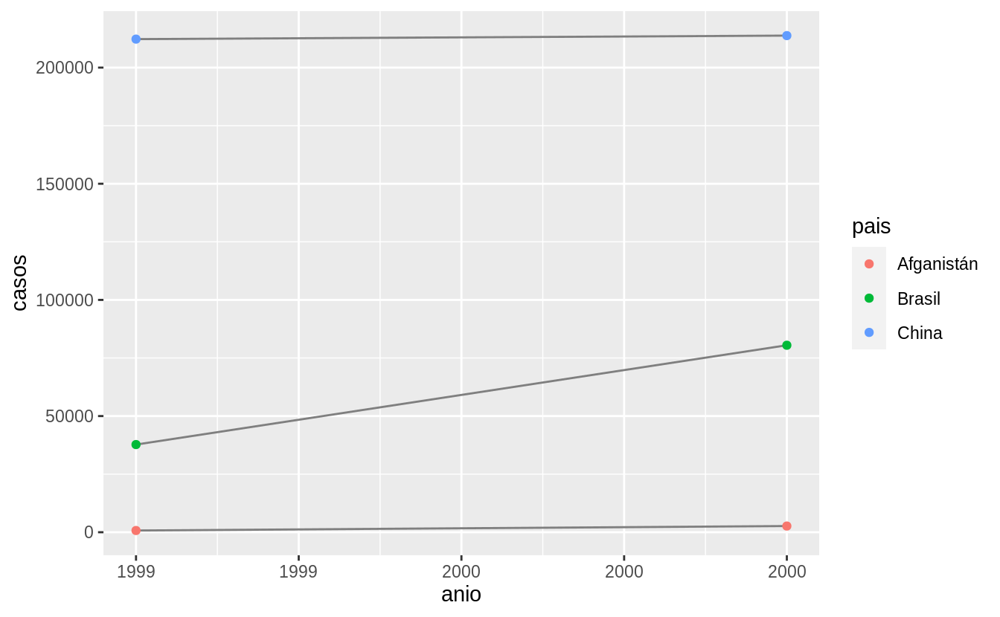

12 Datos ordenados
12.1 Introducción
“Todas las familias felices se parecen unas a otras, pero cada familia infeliz lo es a su manera.” –– León Tolstoy
“Todos los set de datos ordenados se parecen unos a otros, pero cada set de datos desordenado lo es a su manera” — Hadley Wickham
En este capítulo aprenderás una manera consistente para organizar tus datos en R a la que llamaremos tidy data (datos ordenados). Llevar tus datos a este formato requiere algo de trabajo previo; sin embargo, dicho trabajo tiene retorno positivo en el largo plazo. Una vez que tengas tus datos ordenados y las herramientas para ordenar datos que provee el tidyverse, vas a gastar mucho menos tiempo pasando de una forma de representar datos a otra, lo que te permitirá destinar más tiempo a las preguntas analíticas.
Este capítulo te dará una introducción práctica a los datos ordenados (o tidy data) y a las herramientas que provee el paquete tidyr. Si deseas aprender más acerca de la teoría subyacente, puede que te guste el artículo Tidy Data publicado en la revista Journal of Statistical Software, http://www.jstatsoft.org/v59/i10/paper.
12.1.1 Prerrequisitos
En este capítulo nos enfocaremos en tidyr, un paquete que provee un conjunto de herramientas que te ayudarán a ordenar datos desordenados. tidyr es parte del núcleo del tidyverse.
12.2 Datos ordenados
Puedes representar los mismos datos subyacentes de múltiples formas. El ejemplo a continuación muestra los mismos datos organizados de cuatro maneras distintas. Cada dataset muestra los mismos valores de cuatro variables —pais, anio, poblacion y casos—, pero cada uno organiza los valores de forma distinta.
tabla1
#> # A tibble: 6 x 4
#> pais anio casos poblacion
#> <chr> <int> <int> <int>
#> 1 Afganistán 1999 745 19987071
#> 2 Afganistán 2000 2666 20595360
#> 3 Brasil 1999 37737 172006362
#> 4 Brasil 2000 80488 174504898
#> 5 China 1999 212258 1272915272
#> 6 China 2000 213766 1280428583
tabla2
#> # A tibble: 12 x 4
#> pais anio tipo cuenta
#> <chr> <int> <chr> <int>
#> 1 Afganistán 1999 casos 745
#> 2 Afganistán 1999 población 19987071
#> 3 Afganistán 2000 casos 2666
#> 4 Afganistán 2000 población 20595360
#> 5 Brasil 1999 casos 37737
#> 6 Brasil 1999 población 172006362
#> # … with 6 more rows
tabla3
#> # A tibble: 6 x 3
#> pais anio tasa
#> <chr> <int> <chr>
#> 1 Afganistán 1999 745/19987071
#> 2 Afganistán 2000 2666/20595360
#> 3 Brasil 1999 37737/172006362
#> 4 Brasil 2000 80488/174504898
#> 5 China 1999 212258/1272915272
#> 6 China 2000 213766/1280428583
# Dividido en dos tibbles
tabla4a # casos
#> # A tibble: 3 x 3
#> pais `1999` `2000`
#> <chr> <int> <int>
#> 1 Afganistán 745 2666
#> 2 Brasil 37737 80488
#> 3 China 212258 213766
tabla4b # poblacion
#> # A tibble: 3 x 3
#> pais `1999` `2000`
#> <chr> <int> <int>
#> 1 Afganistán 19987071 20595360
#> 2 Brasil 172006362 174504898
#> 3 China 1272915272 1280428583Las anteriores son representaciones de los mismos datos subyacentes, pero no todas son igualmente fáciles de usar. Un tipo de conjunto de datos, el conjunto de datos ordenado, será mucho más fácil de trabajar dentro del tidyverse.
Existen tres reglas interrelacionadas que hacen que un conjunto de datos sea ordenado:
- Cada variable debe tener su propia columna.
- Cada observación debe tener su propia fila.
- Cada valor debe tener su propia celda.
La figura 12.1 muestra estas reglas visualmente.

Figure 12.1: Reglas que hacen que un conjunto de datos sea ordenado: las variables están en columnas, las observaciones en filas y los valores en celdas.
Estas reglas están interrelacionadas ya que es imposible cumplir solo dos de las tres. Esta interrelación lleva a un conjunto práctico de instrucciones más simple aún:
- Coloca cada conjunto de datos en un tibble.
- Coloca cada variable en una columna.
En este ejemplo, solo la tabla1 está ordenada. Es la única representación en que cada columna es una variable.
¿Por qué asegurarse de que los datos estén ordenados? Existen dos ventajas principales:
- Existe una ventaja general al elegir una forma consistente de almacenar datos. Si tienes una estructura de datos consistente, es más fácil aprender las herramientas que funcionan con ella ya que tienen una uniformidad subyacente.
- Existe una ventaja específica al situar las variables en las columnas, ya que permite que la naturaleza vectorizada de R brille. Como habrás aprendido en las secciones sobre crear nuevas variables y resúmenes, muchas de las funciones que vienen con R trabajan con vectores de valores. Esto hace que transformar datos ordenados se perciba como algo casi natural.
dplyr, ggplot2 y el resto de los paquetes del tidyverse están diseñados para trabajar con datos ordenados. Aquí hay algunos ejemplos de cómo podrías trabajar con tabla1.
# Calcular tasa por cada 10,000 habitantes
tabla1 %>%
mutate(tasa = casos / poblacion * 10000)
#> # A tibble: 6 x 5
#> pais anio casos poblacion tasa
#> <chr> <int> <int> <int> <dbl>
#> 1 Afganistán 1999 745 19987071 0.373
#> 2 Afganistán 2000 2666 20595360 1.29
#> 3 Brasil 1999 37737 172006362 2.19
#> 4 Brasil 2000 80488 174504898 4.61
#> 5 China 1999 212258 1272915272 1.67
#> 6 China 2000 213766 1280428583 1.67
# Calcular casos por anio
tabla1 %>%
count(anio, wt = casos)
#> # A tibble: 2 x 2
#> anio n
#> <int> <int>
#> 1 1999 250740
#> 2 2000 296920
# Visualizar cambios en el tiempo
library(ggplot2)
ggplot(tabla1, aes(anio, casos)) +
geom_line(aes(group = pais), colour = "grey50") +
geom_point(aes(colour = pais))
12.2.1 Ejercicios
Usando prosa, describe cómo las variables y observaciones se organizan en las tablas de ejemplo.
Calcula la
tasapara las tablastabla2ytabla4a+tabla4b. Necesitarás las siguientes operaciones:- Extraer el número de casos de tuberculosis por país y año.
- Extraer la población por país y año.
- Dividir los casos por la población y multiplicarla por 10000.
Insertar los datos de vuelta en el lugar adecuado.
¿Cuál representación es más fácil de trabajar? ¿Cuál es la más difícil? ¿Por qué?
- Recrea el gráfico que muestra el cambio en el número de casos usando la
tabla2en lugar de latabla1. ¿Qué necesitas hacer en primero?
12.3 Pivotar
Los principios sobre datos ordenados parecen tan obvios que te podrías preguntar si alguna vez encontrarás un dataset que no esté ordenado. Desafortunadamente, gran parte de los datos que vas a encontrar están desordenados. Existen dos principales razones para esto:
La mayoría de las personas no están familiarizadas con los principios de datos ordenados y es difícil derivarlos por cuenta propia a menos que pases mucho tiempo trabajando con datos.
Los datos a menudo están organizados para facilitar tareas distintas del análisis. Por ejemplo, los datos se organizan para que su registro sea lo más sencillo posible.
Esto significa que para la mayoría de los análisis necesitarás hacer algún tipo de orden. El primer paso es entender siempre cuáles son las variables y las observaciones. Esto a veces es fácil; otras veces deberás consultar con quienes crearon el dataset. El segundo paso es resolver uno de los siguientes problemas frecuentes:
Una variable se extiende por varias columnas
Una observación está dispersa entre múltiples filas.
Típicamente, un set de datos tiene uno de estos problemas. Si contiene ambos ¡significa que tienes muy mala suerte! Para solucionar estos problemas necesitarás las dos funciones más importantes de tidyr: gather() (reunir) y spread() (esparcir/extender).
12.3.1 Datos “largos”
Un problema común es cuando en un dataset los nombres de las columnas no representan nombres de variables, sino que representan los valores de una variable. Tomando el caso de la tabla4a: los nombres de las columnas 1999 y 2000 representan los valores de la variable año, los valores en las columnas 1999 y 2000 representan valores de la variable casos y cada fila representa dos observaciones en lugar de una.
tabla4a
#> # A tibble: 3 x 3
#> pais `1999` `2000`
#> <chr> <int> <int>
#> 1 Afganistán 745 2666
#> 2 Brasil 37737 80488
#> 3 China 212258 213766Para ordenar un dataset como este necesitamos pivotar las columnas que no cumplen en un nuevo par de variables. Para describir dicha operación necesitamos tres parámetros:
El conjunto de columnas cuyos nombres son valores y no variables. En este ejemplo son las columnas
1999y2000.El nombre de la variable cuyos valores forman los nombres de las columnas. Llamaremos a esto
key(clave) y en este caso corresponde aanio.El nombre de la variable cuyos valores están repartidos por las celdas. Llamaremos a esto
value(valor) y en este caso corresponde al número decasos.
Con estos parámetros podemos utilizar la función pivot_longer() (pivotar a lo largo):
tabla4a %>%
pivot_longer(cols = c(`1999`, `2000`), names_to = "anio", values_to = "casos")
#> # A tibble: 6 x 3
#> pais anio casos
#> <chr> <chr> <int>
#> 1 Afganistán 1999 745
#> 2 Afganistán 2000 2666
#> 3 Brasil 1999 37737
#> 4 Brasil 2000 80488
#> 5 China 1999 212258
#> 6 China 2000 213766Las columnas a girar quedan seleccionadas siguiendo el estilo de notación de dplyr::select(). En este caso hay solo dos columnas, por lo que las listamos individualmente. Ten en consideración que “1999” y “2000” son nombres no-sintáxicos (debido a que no comienzan con una letra) por lo que los rodeamos con acentos graves (o_backticks_). Para refrescar tu memoria respecto de la selección de columnas, consulta la sección sobre select. Las variables anio y casos no existen todavpia en la tabla4a, por lo que tenemos que poner sus nombres entre comillas.

Figure 12.2: Pivotar la tabla4 para un formato ‘largo’ y ordenado.
En el resultado final, las columnas pivotadas se eliminan y obtenemos la nuevas columnas anio y casos. La relación entre las variables originales se mantiene, tal como se puede observar en la Figura 12.2. Podemos usar pivot_longer() para ordenar tabla4b de modo similar. La única diferencia es la variable almacenada en los valores de las celdas:
tabla4b %>%
pivot_longer(cols = c(`1999`, `2000`), names_to = "anio", values_to = "poblacion")
#> # A tibble: 6 x 3
#> pais anio poblacion
#> <chr> <chr> <int>
#> 1 Afganistán 1999 19987071
#> 2 Afganistán 2000 20595360
#> 3 Brasil 1999 172006362
#> 4 Brasil 2000 174504898
#> 5 China 1999 1272915272
#> 6 China 2000 1280428583Para combinar las versiones ordenadas de tabla4a y tabla4b en un único tibble, necesitamos usar dplyr::left_join(), función que aprenderás en el capítulo sobre datos relacionales.
tidy4a <- tabla4a %>%
pivot_longer(cols = c(`1999`, `2000`), names_to = "anio", values_to = "casos")
tidy4b <- tabla4b %>%
pivot_longer(cols = c(`1999`, `2000`), names_to = "anio", values_to = "poblacion")
left_join(tidy4a, tidy4b)
#> Joining, by = c("pais", "anio")
#> # A tibble: 6 x 4
#> pais anio casos poblacion
#> <chr> <chr> <int> <int>
#> 1 Afganistán 1999 745 19987071
#> 2 Afganistán 2000 2666 20595360
#> 3 Brasil 1999 37737 172006362
#> 4 Brasil 2000 80488 174504898
#> 5 China 1999 212258 1272915272
#> 6 China 2000 213766 128042858312.3.2 Datos “anchos”
pivot_wider() (pivotar a lo ancho) es lo opuesto de pivot_longer(). Se usa cuando una observación aparece en múltiples filas. Por ejemplo, considera la tabla2: una observación es un país en un año, pero cada observación aparece en dos filas.
tabla2
#> # A tibble: 12 x 4
#> pais anio tipo cuenta
#> <chr> <int> <chr> <int>
#> 1 Afganistán 1999 casos 745
#> 2 Afganistán 1999 población 19987071
#> 3 Afganistán 2000 casos 2666
#> 4 Afganistán 2000 población 20595360
#> 5 Brasil 1999 casos 37737
#> 6 Brasil 1999 población 172006362
#> # … with 6 more rowsPara ordenar esto, primero analizamos la representación de un modo similar a cómo se haría con pivot_longer(). Esta vez, sin embargo, necesitamos únicamente dos parámetros:
La columna desde la que obtener los nombres de las variables. En este caso corresponde a
tipo.La columna desde la que obtener los valores. En este caso corresponde a
cuenta.
Una vez resuelto esto, podemos usar pivot_wider(), como se muestra programáticamente abajo y visualmente en la Figura 12.3.
tabla2 %>%
pivot_wider(names_from = tipo, values_from = cuenta)
#> # A tibble: 6 x 4
#> pais anio casos población
#> <chr> <int> <int> <int>
#> 1 Afganistán 1999 745 19987071
#> 2 Afganistán 2000 2666 20595360
#> 3 Brasil 1999 37737 172006362
#> 4 Brasil 2000 80488 174504898
#> 5 China 1999 212258 1272915272
#> 6 China 2000 213766 1280428583
Figure 12.3: Pivotar la tabla2 para un formato ‘ancho’ y ordenado
Como te habrás dado cuenta a partir de sus nombres, las funciones pivot_longer() y pivot_wider() son complementarias. pivot_longer() genera tablas angostas y largas, pivot_wider() genera tablas anchas y cortas.
12.3.3 Ejercicios
- ¿Por qué
pivot_longer()ypivot_wider()no son perfectamente simétricas? Observa cuidadosamente el siguiente ejemplo:
acciones <- tibble(
anio = c(2015, 2015, 2016, 2016),
semestre = c(1, 2, 1, 2),
retorno = c(1.88, 0.59, 0.92, 0.17)
)
acciones %>%
pivot_wider(names_from = anio, values_from = retorno) %>%
pivot_longer(`2015`:`2016`, names_to = "anio", values_to = "retorno")(Sugerencia: observa los tipos de variables y piensa en los nombres de las columnas)
`pivot_longer()` tiene el argumento `names_ptype`: por ejemplo: `names_ptype = list(year = double())`. ¿Qué es lo que hace dicho argumento?- ¿Por qué falla el siguiente código?
tabla4a %>%
pivot_longer(c(1999, 2000), names_to = "anio", values_to = "casos")
#> Error: Can't subset columns that don't exist.
#> ✖ Locations 1999 and 2000 don't exist.
#> ℹ There are only 3 columns.- ¿Qué pasaría si trataras de pivotar esta tabla a lo ancho? ¿Por qué? ¿Cómo podrías agregar una nueva columna que identifique de manera única cada valor?
personas <- tribble(
~nombre, ~nombres, ~valores,
#-----------------|--------|------
"Phillip Woods", "edad", 45,
"Phillip Woods", "estatura", 186,
"Phillip Woods", "edad", 50,
"Jessica Cordero", "edad", 37,
"Jessica Cordero", "estatura", 156
)- Ordena la siguiente tabla. ¿Necesitas alargarla o ensancharla? ¿Cuáles son las variables?
12.4 Separar y unir
Hasta ahora has aprendido a ordenar las tablas tabla2 y tabla4, pero no la tabla3, que tiene un problema diferente: tenemos una columna (tasa) que contiene dos variables (casos y poblacion). Para solucionar este problema, necesitamos la función separate() (separar). También aprenderás acerca del complemento de separate(): unite() (unir), que se usa cuando una única variable se reparte en varias columnas.
12.4.1 Separar
separate() desarma una columna en varias columnas, dividiendo de acuerdo a la posición de un carácter separador. Tomemos la tabla3:
tabla3
#> # A tibble: 6 x 3
#> pais anio tasa
#> <chr> <int> <chr>
#> 1 Afganistán 1999 745/19987071
#> 2 Afganistán 2000 2666/20595360
#> 3 Brasil 1999 37737/172006362
#> 4 Brasil 2000 80488/174504898
#> 5 China 1999 212258/1272915272
#> 6 China 2000 213766/1280428583La columna tasa contiene tanto los casos como la poblacion, por lo que necesitamos dividirla en dos variables. La función separate() toma el nombre de la columna a separar y el nombre de las columnas a donde irá el resultado, tal como se muestra en la Figura 12.4 y el código a continuación.
tabla3 %>%
separate(tasa, into = c("casos", "poblacion"))
#> # A tibble: 6 x 4
#> pais anio casos poblacion
#> <chr> <int> <chr> <chr>
#> 1 Afganistán 1999 745 19987071
#> 2 Afganistán 2000 2666 20595360
#> 3 Brasil 1999 37737 172006362
#> 4 Brasil 2000 80488 174504898
#> 5 China 1999 212258 1272915272
#> 6 China 2000 213766 1280428583
Figure 12.4: Separar la tabla3 la vuelve ordenada
Por defecto, separate() dividirá una columna donde encuentre un carácter no alfanumérico (esto es, un carácter que no es un número o letra). Por ejemplo, en el siguiente código, separate() divide los valores de tasa donde aparece una barra (/). Si deseas usar un carácter específico para separar una columna, puedes especificarlo en el argumento sep de separate(). Por ejemplo, el código anterior se puede re-escribir del siguiente modo:
(Formalmente, sep es una expresión regular y aprenderás más sobre esto en el capítulo sobre cadenas de caracteres.)
Mira atentamente los tipos de columna: notarás que casos y poblacion son columnas de tipo carácter. Este es el comportamiento por defecto en separate(): preserva el tipo de columna. Aquí, sin embargo, no es muy útil, ya que se trata de números. Podemos pedir a separate() que intente convertir a un tipo más adecuado usando convert = TRUE:
tabla3 %>%
separate(tasa, into = c("casos", "poblacion"), convert = TRUE)
#> # A tibble: 6 x 4
#> pais anio casos poblacion
#> <chr> <int> <int> <int>
#> 1 Afganistán 1999 745 19987071
#> 2 Afganistán 2000 2666 20595360
#> 3 Brasil 1999 37737 172006362
#> 4 Brasil 2000 80488 174504898
#> 5 China 1999 212258 1272915272
#> 6 China 2000 213766 1280428583También puedes pasar un vector de enteros a sep. separate() interpreta los enteros como las posiciones donde dividir. Los valores positivos comienzan en 1 al extremo izquierdo de las cadenas de texto; los valores negativos comienzan en -1 al extremo derecho. Cuando uses enteros para separar cadenas de texto, el largo de sep debe ser uno menos que el número de nombres en into.
Puedes usar este arreglo para separar los últimos dos dígitos de cada año. Esto deja los datos menos ordenados, pero es útil en otros casos, como se verá más adelante.
tabla3 %>%
separate(anio, into = c("siglo", "anio"), sep = 2)
#> # A tibble: 6 x 4
#> pais siglo anio tasa
#> <chr> <chr> <chr> <chr>
#> 1 Afganistán 19 99 745/19987071
#> 2 Afganistán 20 00 2666/20595360
#> 3 Brasil 19 99 37737/172006362
#> 4 Brasil 20 00 80488/174504898
#> 5 China 19 99 212258/1272915272
#> 6 China 20 00 213766/128042858312.4.2 Unir
unite() es el inverso de separate(): combina múltiples columnas en una única columna. Necesitarás esta función con mucha menos frecuencia que separate(), pero aún así es una buena herramienta para tener en el bolsillo trasero.

Figure 12.5: Unir la tabla5 la vuelve ordenada
Podemos usar unite() para unir las columnas siglo y anio creadas en el ejemplo anterior. Los datos están guardados en datos::tabla5. unite() toma un data frame, el nombre de la nueva variable a crear y un conjunto de columnas a combinar, las que se especifican siguiendo el estilo de la función dplyr::select():
tabla5 %>%
unite(nueva, siglo, anio)
#> # A tibble: 6 x 3
#> pais nueva tasa
#> <chr> <chr> <chr>
#> 1 Afganistán 19_99 745/19987071
#> 2 Afganistán 20_00 2666/20595360
#> 3 Brasil 19_99 37737/172006362
#> 4 Brasil 20_00 80488/174504898
#> 5 China 19_99 212258/1272915272
#> 6 China 20_00 213766/1280428583En este caso también necesitamos el argumento sep. Por defecto, pondrá un guión bajo (_) entre los valores de las distintas columnas. Si no queremos ningún separador usamos "":
tabla5 %>%
unite(nueva, siglo, anio, sep = "")
#> # A tibble: 6 x 3
#> pais nueva tasa
#> <chr> <chr> <chr>
#> 1 Afganistán 1999 745/19987071
#> 2 Afganistán 2000 2666/20595360
#> 3 Brasil 1999 37737/172006362
#> 4 Brasil 2000 80488/174504898
#> 5 China 1999 212258/1272915272
#> 6 China 2000 213766/128042858312.4.3 Ejercicios
- ¿Qué hacen los argumentos
extrayfillenseparate()? Experimenta con las diversas opciones a partir de los siguientes datasets de ejemplo.
tibble(x = c("a,b,c", "d,e,f,g", "h,i,j")) %>%
separate(x, c("one", "two", "three"))
tibble(x = c("a,b,c", "d,e", "f,g,i")) %>%
separate(x, c("one", "two", "three"))Tanto
unite()comoseparate()tienen un argumentoremove. ¿Qué es lo que hace? ¿Por qué lo dejarías enFALSE?Compara y contrasta
separate()yextract(). ¿Por qué existen tres variaciones de separación (por posición, separador y grupos), pero solo una forma de unir?
12.5 Valores faltantes
Cambiar la representación de un dataset conlleva el riesgo de generar valores faltantes. Sorprendentemente, un valor puede perderse de dos formas:
- Explícita, esto es, aparece como
NA. - Implícita, esto es, simplemente no aparece en los datos.
Ilustremos esta idea con un dataset muy sencillo:
acciones <- tibble(
anio = c(2015, 2015, 2015, 2015, 2016, 2016, 2016),
trimestre = c(1, 2, 3, 4, 2, 3, 4),
retorno = c(1.88, 0.59, 0.35, NA, 0.92, 0.17, 2.66)
)Existen dos valores faltantes en este dataset:
El retorno del cuarto trimestre de 2015 que está explícitamente perdido, debido a que la celda donde el valor debiera estar contiene
NA.El retorno del primer semestre de 2016 está implícitamente perdido, debido a que simplemente no aparece en el set de datos.
Una forma de pensar respecto de esta diferencia es al estilo de un kōan Zen: Un valor faltante explícito es la presencia de una ausencia; un valor faltante implícito es la ausencia de una presencia.
La forma en que se representa un dataset puede dejar explícitos los valores implícitos. Por ejemplo, podemos volver explícitos los valores faltantes implícitos al mover los años a las columnas:
acciones %>%
spread(anio, retorno)
#> # A tibble: 4 x 3
#> trimestre `2015` `2016`
#> <dbl> <dbl> <dbl>
#> 1 1 1.88 NA
#> 2 2 0.59 0.92
#> 3 3 0.35 0.17
#> 4 4 NA 2.66Debido a que estos valores faltantes explícitos pueden no ser tan importantes en otras representaciones de los datos, puedes especificar na.rm = TRUE en gather() para dejar explícitos los valores faltantes implícitos:
acciones %>%
pivot_wider(names_from = anio, values_from = retorno) %>%
pivot_longer(
cols = c(`2015`, `2016`),
names_to = "anio",
values_to = "retorno",
values_drop_na = TRUE
)
#> # A tibble: 6 x 3
#> trimestre anio retorno
#> <dbl> <chr> <dbl>
#> 1 1 2015 1.88
#> 2 2 2015 0.59
#> 3 2 2016 0.92
#> 4 3 2015 0.35
#> 5 3 2016 0.17
#> 6 4 2016 2.66Otra herramienta importante para hacer explícitos los valores faltantes en datos ordenados es complete():
acciones %>%
complete(anio, trimestre)
#> # A tibble: 8 x 3
#> anio trimestre retorno
#> <dbl> <dbl> <dbl>
#> 1 2015 1 1.88
#> 2 2015 2 0.59
#> 3 2015 3 0.35
#> 4 2015 4 NA
#> 5 2016 1 NA
#> 6 2016 2 0.92
#> # … with 2 more rowscomplete() toma un conjunto de columnas y encuentra todas las combinaciones únicas. Luego se asegura de que el dataset original contenga todos los valores, completando con NAs donde sea necesario.
Existe otra herramienta importante que deberías conocer al momento de trabajar con valores faltantes. En algunos casos en que la fuente de datos se ha usado principalmente para ingresar datos, los valores faltantes indican que el valor previo debe arrastrarse hacia adelante:
tratamiento <- tribble(
~sujeto, ~tratamiento, ~respuesta,
"Derrick Whitmore", 1, 7,
NA, 2, 10,
NA, 3, 9,
"Katherine Burke", 1, 4
)Puedes completar los valores faltantes usando fill(). Esta función toma un conjunto de columnas sobre las cuales los valores faltantes son reemplazados por el valor anterior más cercano que se haya reportado (también conocido como el método LOCF, del inglés last observation carried forward).
tratamiento %>%
fill(sujeto)
#> # A tibble: 4 x 3
#> sujeto tratamiento respuesta
#> <chr> <dbl> <dbl>
#> 1 Derrick Whitmore 1 7
#> 2 Derrick Whitmore 2 10
#> 3 Derrick Whitmore 3 9
#> 4 Katherine Burke 1 412.5.1 Ejercicios
Compara y contrasta el argumento
fillque se usa enpivot_wider()concomplete().¿Qué hace el argumento de dirección en
fill()?
12.6 Estudio de caso
Para finalizar el capítulo, combinemos todo lo que aprendiste para enfrentar un problema real de ordenamiento de datos. El dataset datos::oms contiene datos de tuberculosis (TB) detallados por año, país, edad, sexo y método de diagnóstico. Los datos provienen del Informe de Tuberculosis de la Organización Mundial de la Salud 2014, disponible en http://www.who.int/tb/country/data/download/en/.
Existe abundante información epidemiológica en este dataset, pero es complicado trabajar con estos datos tal como son entregados:
oms
#> # A tibble: 7,240 x 60
#> pais iso2 iso3 anio nuevos_fpp_h014 nuevos_fpp_h1524 nuevos_fpp_h2534
#> <chr> <chr> <chr> <int> <int> <int> <int>
#> 1 Afga… AF AFG 1980 NA NA NA
#> 2 Afga… AF AFG 1981 NA NA NA
#> 3 Afga… AF AFG 1982 NA NA NA
#> 4 Afga… AF AFG 1983 NA NA NA
#> 5 Afga… AF AFG 1984 NA NA NA
#> 6 Afga… AF AFG 1985 NA NA NA
#> # … with 7,234 more rows, and 53 more variables: nuevos_fpp_h3534 <int>,
#> # nuevos_fpp_h4554 <int>, nuevos_fpp_h5564 <int>, nuevos_fpp_h65 <int>,
#> # nuevos_fpp_m014 <int>, nuevos_fpp_m1524 <int>, nuevos_fpp_m2534 <int>,
#> # nuevos_fpp_m3534 <int>, nuevos_fpp_m4554 <int>, nuevos_fpp_m5564 <int>,
#> # nuevos_fpp_m65 <int>, nuevos_fpn_h014 <int>, nuevos_fpn_h1524 <int>,
#> # nuevos_fpn_h2534 <int>, nuevos_fpn_h3534 <int>, nuevos_fpn_h4554 <int>,
#> # nuevos_fpn_h5564 <int>, nuevos_fpn_h65 <int>, nuevos_fpn_m014 <int>,
#> # nuevos_fpn_m1524 <int>, nuevos_fpn_m2534 <int>, nuevos_fpn_m3534 <int>,
#> # nuevos_fpn_m4554 <int>, nuevos_fpn_m5564 <int>, nuevos_fpn_m65 <int>,
#> # nuevos_ep_h014 <int>, nuevos_ep_h1524 <int>, nuevos_ep_h2534 <int>,
#> # nuevos_ep_h3534 <int>, nuevos_ep_h4554 <int>, nuevos_ep_h5564 <int>,
#> # nuevos_ep_h65 <int>, nuevos_ep_m014 <int>, nuevos_ep_m1524 <int>,
#> # nuevos_ep_m2534 <int>, nuevos_ep_m3534 <int>, nuevos_ep_m4554 <int>,
#> # nuevos_ep_m5564 <int>, nuevos_ep_m65 <int>, nuevosrecaida_h014 <int>,
#> # nuevosrecaida_h1524 <int>, nuevosrecaida_h2534 <int>,
#> # nuevosrecaida_h3534 <int>, nuevosrecaida_h4554 <int>,
#> # nuevosrecaida_h5564 <int>, nuevosrecaida_h65 <int>,
#> # nuevosrecaida_m014 <int>, nuevosrecaida_m1524 <int>,
#> # nuevosrecaida_m2534 <int>, nuevosrecaida_m3534 <int>,
#> # nuevosrecaida_m4554 <int>, nuevosrecaida_m5564 <int>,
#> # nuevosrecaida_m65 <int>Este es un ejemplo muy típico de un dataset de la vida real. Contiene columnas redundantes, códigos extraños de variables y muchos valores faltantes. En breve, oms está desordenado y necesitamos varios pasos para ordenarlo. Al igual que dplyr, tidyr está diseñado de modo tal que cada función hace bien una cosa. Esto significa que en una situación real deberás encadenar múltiples verbos.
LCasi siempre, la mejor forma de comenzar es reunir las columnas que no representan variables. Miremos lo que hay:
Pareciera ser que
pais,iso2eiso3son variables redundantes que se refieren al país.anioes claramente una variable.No sabemos aún el significado de las otras columnas, pero dada la estructura de los nombres de las variables (e.g.
nuevos_fpp_h014,nuevos_ep_h014,nuevos_ep_m014) parecieran ser valores y no variables.
Necesitamos agrupar todas las columnas desde nuevos_fpp_h014 hasta recaidas_m65. No sabemos aún qué representa esto, por lo que le daremos el nombre genérico de "clave". Sabemos que las celdas representan la cuenta de casos, por lo que usaremos la variable casos.
Existen múltiples valores faltantes en la representación actual, por lo que de momento usaremos na.rm para centrarnos en los valores que están presentes.
oms1 <- oms %>%
pivot_longer(
cols = nuevos_fpp_h014:nuevosrecaida_m65,
names_to = "clave",
values_to = "casos",
values_drop_na = TRUE
)
oms1
#> # A tibble: 76,046 x 6
#> pais iso2 iso3 anio clave casos
#> <chr> <chr> <chr> <int> <chr> <int>
#> 1 Afganistán AF AFG 1997 nuevos_fpp_h014 0
#> 2 Afganistán AF AFG 1997 nuevos_fpp_h1524 10
#> 3 Afganistán AF AFG 1997 nuevos_fpp_h2534 6
#> 4 Afganistán AF AFG 1997 nuevos_fpp_h3534 3
#> 5 Afganistán AF AFG 1997 nuevos_fpp_h4554 5
#> 6 Afganistán AF AFG 1997 nuevos_fpp_h5564 2
#> # … with 76,040 more rowsPodemos tener una noción de la estructura de los valores en la nueva columna clave si hacemos un conteo:
oms1 %>%
count(clave)
#> # A tibble: 56 x 2
#> clave n
#> <chr> <int>
#> 1 nuevos_ep_h014 1038
#> 2 nuevos_ep_h1524 1026
#> 3 nuevos_ep_h2534 1020
#> 4 nuevos_ep_h3534 1024
#> 5 nuevos_ep_h4554 1020
#> 6 nuevos_ep_h5564 1015
#> # … with 50 more rowsPodrías resolver esto por tu cuenta pensando y experimentando un poco, pero afortunadamente tenemos el diccionario de datos a mano. Este nos dice lo siguiente:
Lo que aparece antes del primer
_en las columnas indica si la columna contiene casos nuevos o antiguos de tuberculosis. En este dataset, cada columna contiene nuevos casos.Lo que aparece luego de indicar si se refiere casos nuevos o antiguos es el tipo de tuberculosis:
recaidase refiere a casos reincidentesepse refiere a tuberculosis extra pulmonarfpnse refiere a casos de tuberculosis pulmonar que no se pueden detectar mediante examen de frotis pulmonar (frotis pulmonar negativo)fppse refiere a casos de tuberculosis pulmonar que se pueden detectar mediante examen de frotis pulmonar (frotis pulmonar positivo)
La letra que aparece después del último
_se refiere al sexo de los pacientes. El conjunto de datos agrupa en hombres (h) y mujeres (m).Los números finales se refieren al grupo etareo que se ha organizado en siete categorías:
014= 0 – 14 años de edad1524= 15 – 24 años de edad2534= 25 – 34 años de edad3544= 35 – 44 años de edad4554= 45 – 54 años de edad5564= 55 – 64 años de edad65= 65 o más años de edad
Necesitamos hacer un pequeño cambio al formato de los nombres de las columnas: desafortunadamente lo nombres de las columnas son ligeramente inconsistentes debido a que en lugar de nuevos_recaida tenemos nuevosrecaida (es difícil darse cuenta de esto en esta parte, pero si no lo arreglas habrá errores en los pasos siguientes). Aprenderás sobre str_replace() en cadenas de caracteres, pero la idea básica es bastante simple: reemplazar los caracteres “nuevosrecaida” por “nuevos_recaida”. Esto genera nombres de variables consistentes.
oms2 <- oms1 %>%
mutate(clave = stringr::str_replace(clave, "nuevosrecaida", "nuevos_recaida"))
oms2
#> # A tibble: 76,046 x 6
#> pais iso2 iso3 anio clave casos
#> <chr> <chr> <chr> <int> <chr> <int>
#> 1 Afganistán AF AFG 1997 nuevos_fpp_h014 0
#> 2 Afganistán AF AFG 1997 nuevos_fpp_h1524 10
#> 3 Afganistán AF AFG 1997 nuevos_fpp_h2534 6
#> 4 Afganistán AF AFG 1997 nuevos_fpp_h3534 3
#> 5 Afganistán AF AFG 1997 nuevos_fpp_h4554 5
#> 6 Afganistán AF AFG 1997 nuevos_fpp_h5564 2
#> # … with 76,040 more rowsPodemos separar los valores en cada código aplicando separate() dos veces. La primera aplicación dividirá los códigos en cada _.
oms3 <- oms2 %>%
separate(clave, c("nuevos", "tipo", "sexo_edad"), sep = "_")
oms3
#> # A tibble: 76,046 x 8
#> pais iso2 iso3 anio nuevos tipo sexo_edad casos
#> <chr> <chr> <chr> <int> <chr> <chr> <chr> <int>
#> 1 Afganistán AF AFG 1997 nuevos fpp h014 0
#> 2 Afganistán AF AFG 1997 nuevos fpp h1524 10
#> 3 Afganistán AF AFG 1997 nuevos fpp h2534 6
#> 4 Afganistán AF AFG 1997 nuevos fpp h3534 3
#> 5 Afganistán AF AFG 1997 nuevos fpp h4554 5
#> 6 Afganistán AF AFG 1997 nuevos fpp h5564 2
#> # … with 76,040 more rowsA continuación podemos eliminar la columna nuevos, ya que es constante en este dataset. Además eliminaremos iso2 e iso3 ya que son redundantes.
oms3 %>%
count(nuevos)
#> # A tibble: 1 x 2
#> nuevos n
#> <chr> <int>
#> 1 nuevos 76046
oms4 <- oms3 %>%
select(-nuevos, -iso2, -iso3)Luego separamos sexo_edad en sexo y edad dividiendo luego del primer carácter:
oms5 <- oms4 %>%
separate(sexo_edad, c("sexo", "edad"), sep = 1)
oms5
#> # A tibble: 76,046 x 6
#> pais anio tipo sexo edad casos
#> <chr> <int> <chr> <chr> <chr> <int>
#> 1 Afganistán 1997 fpp h 014 0
#> 2 Afganistán 1997 fpp h 1524 10
#> 3 Afganistán 1997 fpp h 2534 6
#> 4 Afganistán 1997 fpp h 3534 3
#> 5 Afganistán 1997 fpp h 4554 5
#> 6 Afganistán 1997 fpp h 5564 2
#> # … with 76,040 more rows¡Ahora el dataset oms está ordenado!
Hemos mostrado el código parte por parte, asignando los resultados intermedios a nuevas variables. Esta no es la forma típica de trabajo. En cambio, lo que se hace es formar incrementalmente un encadenamiento complejo usando pipes:
oms %>%
pivot_longer(
cols = nuevos_fpp_h014:nuevosrecaida_m65,
names_to = "clave",
values_to = "valor",
values_drop_na = TRUE) %>%
mutate(clave = stringr::str_replace(clave, "nuevosrecaida", "nuevos_recaida")) %>%
separate(clave, c("nuevos", "tipo", "sexo_edad")) %>%
select(-nuevos, -iso2, -iso3) %>%
separate(sexo_edad, c("sexo", "edad"), sep = 1)12.6.1 Ejercicios
En este caso de estudio fijamos
values_drop_na = TRUEpara hacer más simple el verificar que tenemos los valores correctos. ¿Es esto razonable? Piensa en cómo los valores faltantes están representados en este dataset. ¿Existen valores faltantes implícitos? ¿Cuál es la diferencia entreNAy cero?¿Qué ocurre si omites la aplicación de
mutate()? (mutate(clave = stringr::str_replace(clave, "nuevosrecaida", "nuevos_recaida")))Afirmamos que
iso2eiso3son redundantes respecto apais. Confirma esta aseveración.Para cada país, año y sexo calcula el total del número de casos de tuberculosis. Crea una visualización informativa de los datos.
12.7 Datos no ordenados
Antes de pasar a otros tópicos, es conveniente referirse brevemente a datos no ordenados. Anteriormente en el capítulo, usamos el término peyorativo “desordenados” para referirnos a datos no ordenados. Esto es una sobresimplificación: existen múltiples estructuras de datos debidamente fundamentadas que no corresponden a datos ordenados. Existen dos principales razones para usar otras estructuras de datos:
Las representaciones alternativas pueden traer ventajas importantes en términos de desempeño o tamaño.
Algunas áreas especializadas han evolucionado y tienen sus propias convenciones para almacenar datos, las que pueden diferir respecto de las convenciones de datos ordenados.
Cada uno de estas razones significa que necesitarás algo distinto a un tibble (o data frame). Si tus datos naturalmente se ajustan a una estructura rectangular compuesta de observaciones y variables, pensamos que datos ordenados debería ser tu elección por defecto. Sin embargo, existen buenas razones para usar otras estructuras; los datos ordenados no son la única forma.
Si quieres aprender más acerca de datos no ordenados, recomendamos fuertemente este artículo del blog de Jeff Leek: http://simplystatistics.org/2016/02/17/non-tidy-data/